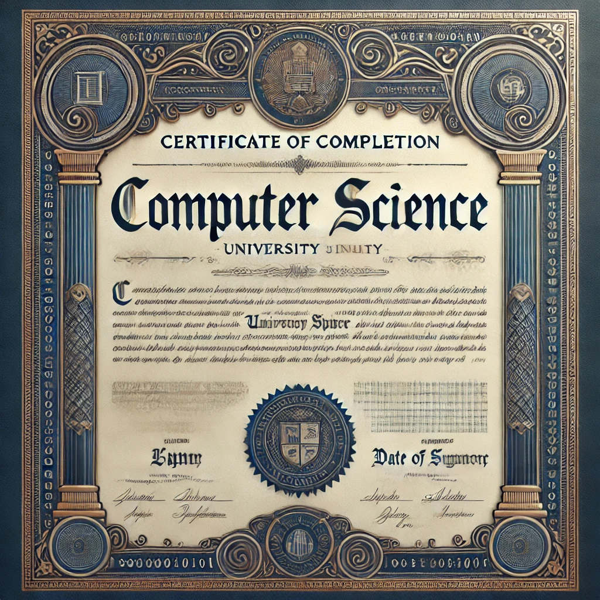

Qui sommes-nous ?
Située au cœur de l’écosystème numérique des Hauts de France, dans le bâtiment historique d’Euratechnologies, à 12 minutes du centre-ville et desservie par les moyens de transports en commun, ENIGMA propose des formations en informatique en alternance Bac+3 et Bac+5 reconnues par l’Etat (contrat d’apprentissage ou de professionnalisation).
ENIGMA est une école indépendante n’appartenant à aucun groupe, offrant l’avantage d’être une structure à taille humaine, avec des effectifs par classe de 15 à 20 élèves. Cela permet un suivi et un accompagnement individualisé des étudiants.
L’équipe pédagogique est composée d’intervenants issus du monde de l’entreprise. En plus de transmettre leurs expertises, ils partagent leurs expériences professionnelles, offrant ainsi aux étudiants une nouvelle dimension aux acquis théoriques.
Pour les Étudiants
BAC+3 : Coordinateur de Projets Informatiques
Les 1ère et 2ème années sont en formation initiale avec stage de 2 ou 3 mois. Elles permettent de balayer les fondamentaux des sciences de l’informatique dans les métiers du développement, des systèmes réseaux et cloud, de la data et de la gestion de projet. La 1ère année est accessible après un Bac général série scientifique spécialités mathématiques, NSI ou Bac technologique série STI2D spécialité SIN. La 2ème année après un Bac+1 validé dans le domaine de l’informatique.
La 3ème année peut se faire en alternance (contrat de professionnalisation ou contrat d’apprentissage) ou en formation initiale avec 4 à 6 mois de stage. Elle est ouverte en passerelle après un Bac+2 validé dans le domaine de l’informatique.
Les étudiants ayant validé le Cycle 1 peuvent poursuivre en Cycle 2 ou dans une autre formation en informatique de niveau BAC+4.
BAC+5 : Expert en Systèmes d’Information
Les 4ème et 5ème années se font obligatoirement en alternance, en contrat de professionnalisation ou en apprentissage.
En 4ème année, l’étudiant choisit un cursus métier : Cybersécurité, Retail ou Santé. La 4ème année d’études est ouverte aux étudiants ayant suivi le cycle 1 ou à ceux justifiant d’un Bac+3/Bac+4 validé dans le domaine de l’informatique.
En 5ème année, il s’oriente vers l’une de nos trois spécialisations techniques : Développement web & mobile, Big data & Business Intelligence, Systèmes réseaux & Cloud. Il n’y a pas d’admission passerelle en 5ème année.
Prix de l'Année et Alternance
Pour nous rejoindre, pas de frais de dossier, d’admission, de tests, et d’entretien.
Les frais de scolarité annuels pour l’année académique 2024/2025, en Formation Initiale, s’élèvent à :
- 8 500 € en 1ère et 2ème année
- 9 500 € en 3ème année (sauf si en alternance)
Les frais de scolarité indiqués sont susceptibles d’évoluer chaque année en fonction de la progression de l’indice INSEE des prix à la consommation. Aucun frais de scolarité en 3ème année si celle-ci s’effectue en alternance.
Aucun frais de scolarité en Cycle 2 (4ème et 5ème année) car l’alternance est obligatoire. Les frais sont mensualisés dès octobre, après un acompte non remboursable de 500 €. Nos programmes sont accessibles à toute personne en situation de handicap.
1 jour en cours / 4 jours en entreprise (après une période de mise à jour des connaissances à l’entrée en 3ème et 4ème année).
Grâce à l’alternance en 3ème, 4ème et 5ème année, le coût de votre formation est pris en charge par l’OPCO et l’entreprise d’accueil.
Certifications
Nous proposons des formations certifiantes reconnues par l'Etat. Cela garantit un niveau de qualité et une reconnaissance sur le marché de l'emploi.
